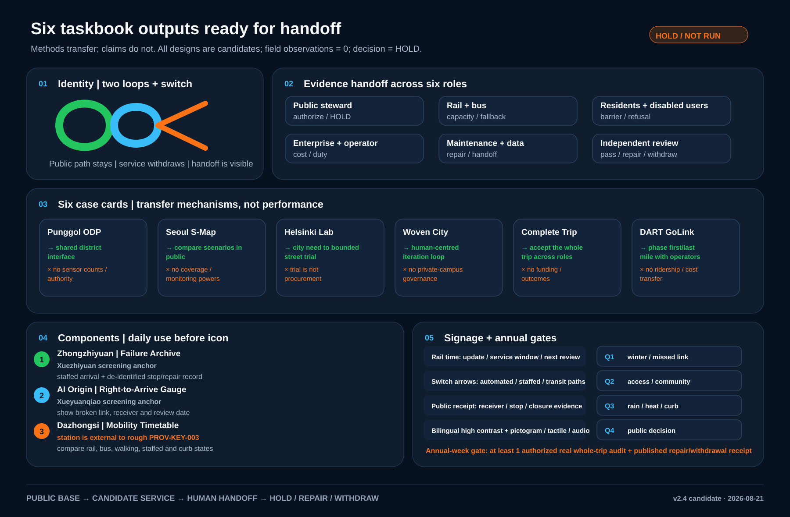
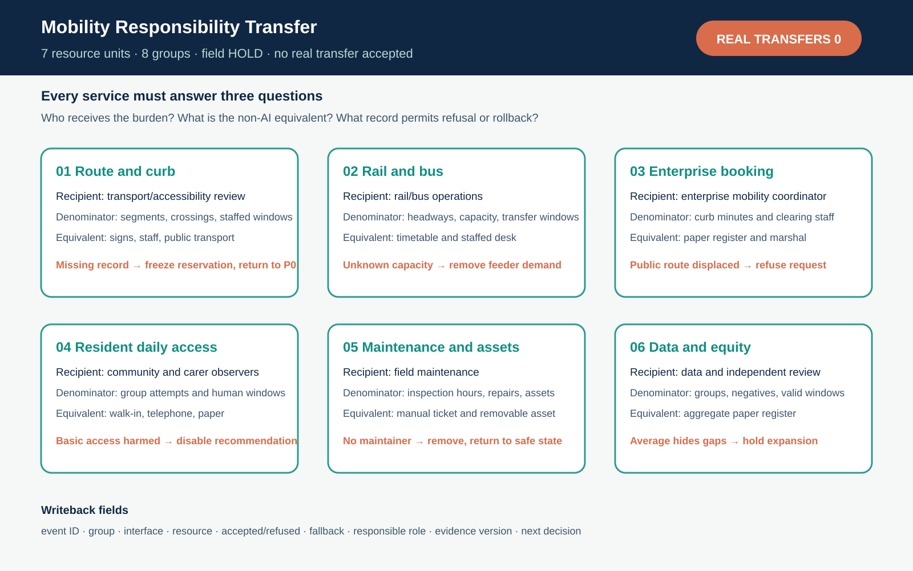
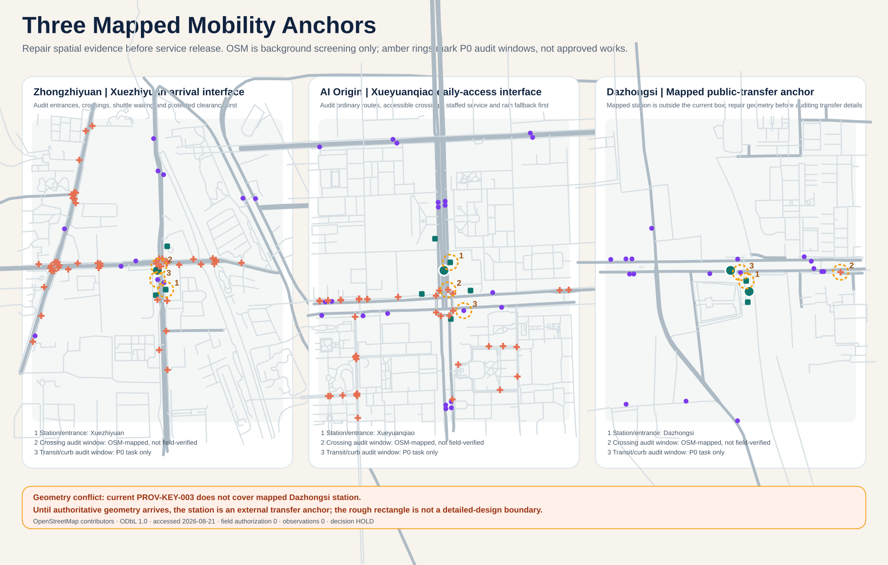
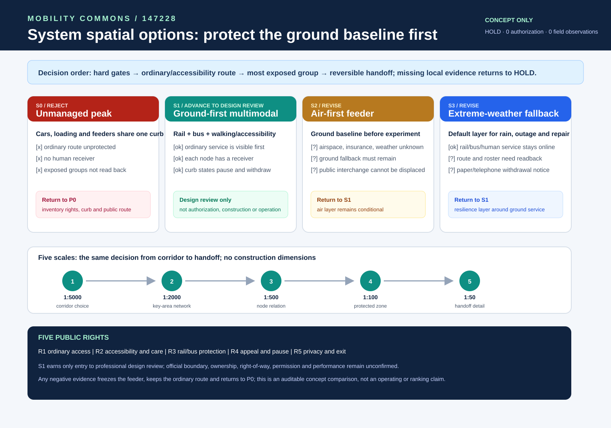

Five-minute review path: person first, space second, release decision last
This is a reading order for the 23 evidence cards, not a substitute for them. Each step leads back to a package-local board, JSON file, runner or responsibility record. Missing field baselines, receivers or authorization keep the decision at HOLD.
Three key areas, one shared mobility loop
Provisional boundaryRail and bus form the backbone. Enterprise arrivals, daily resident trips, transfers and curb operations share one auditable service relationship; the loop is not an unreviewed new road.

Regional → overall → key areas
One revisionThe regional layer handles cross-boundary commuting; the overall layer organizes land and the multimodal network; key areas host only authorized reversible tests. A boundary change triggers a full package recalculation.
Three areas and two wings
Design rolesZhongzhiyuan handles controlled enterprise arrival; AI Origin handles a complete daily trip; Dazhongsi handles a public-transfer interface. The two wings provide professional support and reversible failure drills.

Land-use shares recomputed from GeoJSON
Not statutory planningFour design polygons use the same 11,412,825.386 m² provisional denominator: 23.4347%, 22.6880%, 29.4943% and 24.3830%. The board states areas, confidence and the recalculation path.

Rail / bus / walking / curb
Ordinary path firstCurb states are open, booked, service, human-only and emergency. Every change needs a receiver, end time, clear-down action, alternative route and complaint entry.

Blue-green space protects fallback
No transferred performanceShade, rest, wet-weather fallback and night legibility serve the complete trip. Without local thermal, drainage, ecology and maintenance evidence, the package claims no health, cooling or flood result.
Buildings are ground-floor interfaces
No massing claimEntrances, crossings, ramps, waiting, cycle parking and staffed counters may start as reversible interfaces. FAR, height and demolition remain unknown without survey, structure and fire evidence.
Register → trial → review → stop/expand
ReversibleP0 builds evidence; P1 checks ordinary routes and curbs; P2 is considered only after transport, fire, accessibility, privacy, operation and maintenance sign-off. Missing roles return the proposal to HOLD.

AI is a bounded service
Refusal keeps accessAI groups needs, explains conflicts, presents options and prepares fallback. Human, telephone, paper and public-transport routes stay equivalent when a person refuses AI or when systems fail.
Known / unknown / planned denominators
Never mixedSpatial values come from package geometry. 48 curb windows, 24 ordinary-route attempts, 12 affected-user accessibility walks and eight handoff drills are future coverage plans. Field values remain null.
Each task has distinct evidence
23 mapped requirementsThe open call and agent.1–agent.6 map separately to sections, layers, metrics, drawings, visuals, sources, standards, assumptions and gates.
Self-check proves reviewability only
Not an official scoreDeterministic, spatial, visual and professional gates test package consistency. They prove no field outcome, permit, maintainer score or award. The protected 69-point version remains isolated.
Sources transfer methods only
Ten current referencesWhole-trip and curb sources define evaluation; Punggol, Seoul, Helsinki and Woven City add district-interface, public-sandbox, bounded-trial and iteration methods. No institution, authority or performance transfers.
A gap is evidence too
Explicit unknownsBoundary, demand, resident experience, curb, station, accessibility, operation, privacy, transfer, blue-green, charging, simulation and field work each keep a separate assumption.
Multimodal network / external commute / air candidate
Hard gates firstGrouped users and OD windows cover metro, bus, bicycle, walking/wheelchair, cars and an air candidate. Air remains blocked until airspace, safety, insurance, weather, fire, noise, ground access and public participation pass.
Transparent sandbox, not a baseline
Synthetic inputsA normalized 1,000-person unit compares unmanaged peak, coordinated curb, ground weather fallback and a blocked air candidate. Outputs require local signal, station, behaviour and flow calibration.

Three mobility-service interfaces
Field values = 0Each area shows its affected groups, denominators, non-AI equivalent, refusal rule and human fallback. Real route observations, responsible receivers and authorization have not begun.

First 168 hours and first 12 weeks
Default HOLDEvery window names the receiver, retained evidence, stop condition and ordinary path after stopping. The chain produces a continue-evidence, repair or withdrawal receipt—not service opening.

One-day receipt: all seven links pass
No averagingPre-trip information, building exit, first accessible leg, crossing/entrance, boarding/transfer, last leg, and destination/return must each pass. One broken link makes the trip incomplete.

Taskbook agent.1–agent.6
Six deliverablesNaming, ecosystem, AI+ scenarios, public-space components, cultural signage and annual operation each have a concrete first output and an explicit professional-review boundary.

Responsibility handoff and public floor
No receiver means stopPublic transport, accessibility, curb, data, appeal and independent-review roles must be confirmed individually. A gap returns the trip to human, telephone, paper and public transport.

Public-map screening fixes the P0 audit points
Not field verificationPublic-map screening records entrances, crossings and curb audit order. Only six nodes and two sequences for Zhongzhiyuan and AI Origin fall inside both the provisional SITE and matching key area, so they enter formal geometry as low-confidence design features. Dazhongsi's three nodes and one sequence remain visual background because of the 2.31 km boundary conflict. The interface and option boards then show handover, withdrawal and the ground public baseline; every scale remains a review label.



Cases, identity, ecosystem, components, signage, calendar
Six tangible outputsSix case cards state transfer and non-transfer. The two-loop identity separates public passage, candidate service and human takeover. Mobility Commons Week waits for one authorized real trip audit and a published repair/withdrawal receipt.